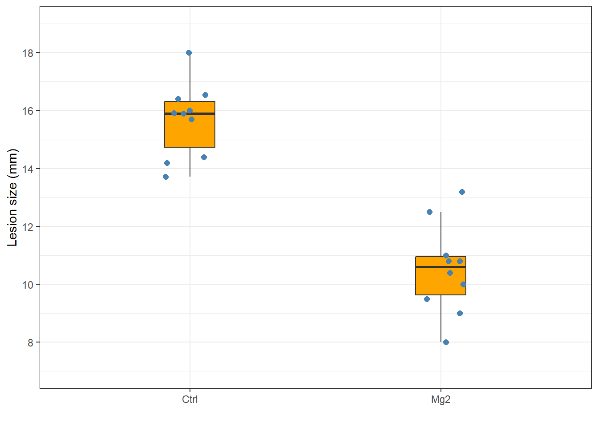
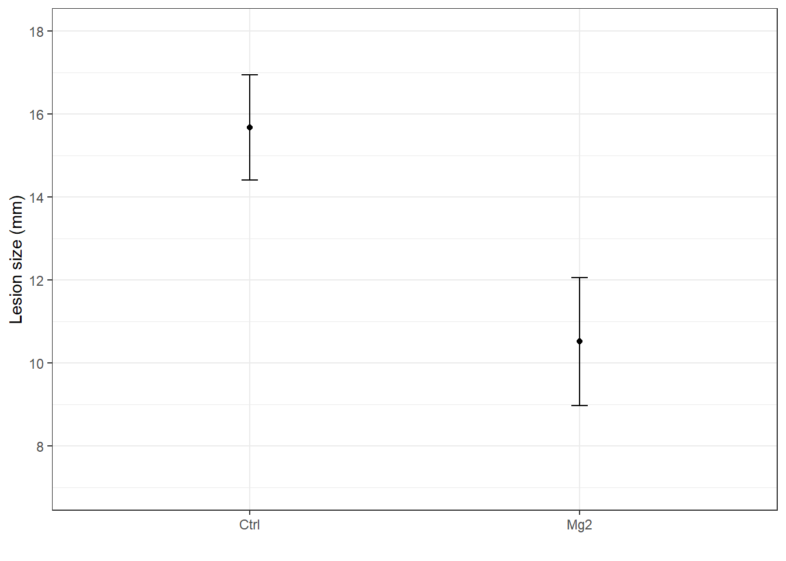
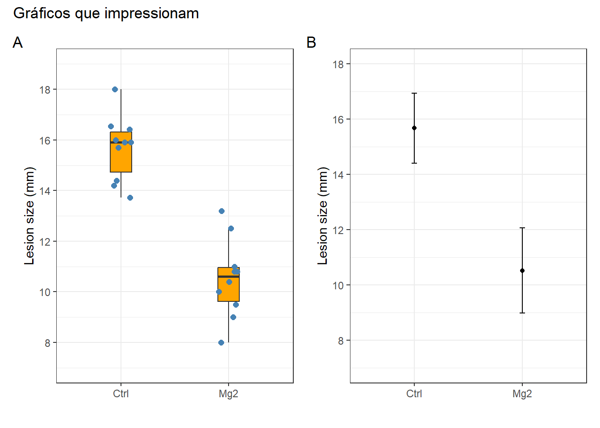
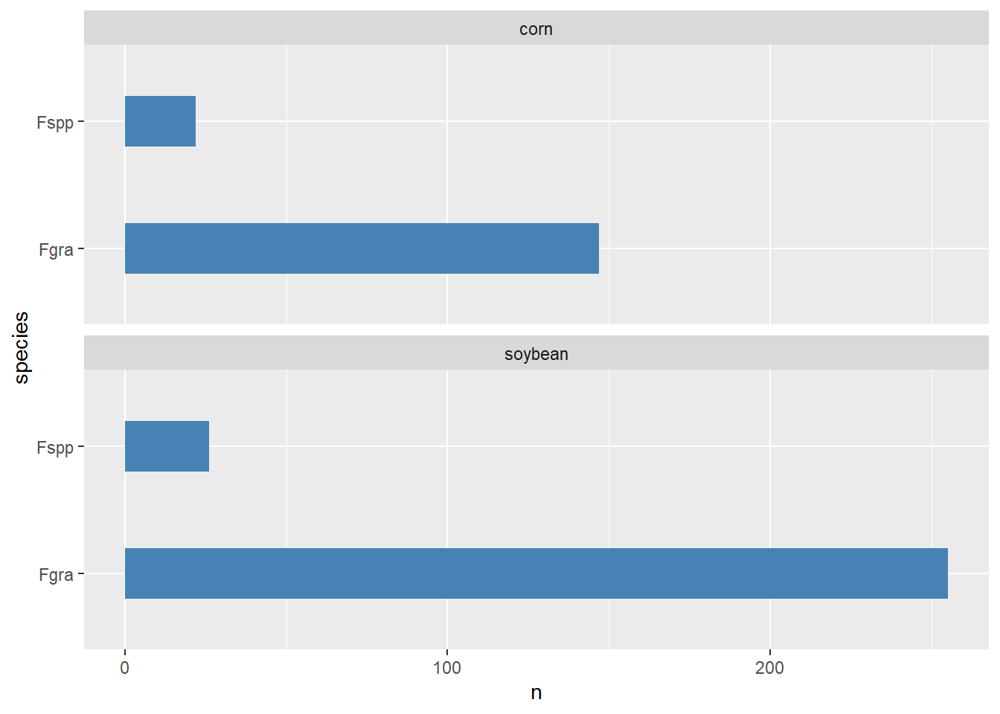

library(tidyverse)
library(readxl)
mg <- read_excel("dados-diversos.xlsx")aula5
Importa dados
Visualiza
### entra no mg, então
p_box <- mg |> ggplot(aes(trat, comp))+
#geom_point()+
# outlier.color = NA - retirar ponto outline do
geom_boxplot(outlier.color = NA,
fill = "orange",
size = 0.5,
width = 0.2)+
# para desagregar os pontos
geom_jitter(width=0.1,
height = 0,
size = 2,
color = "steelblue")+
# a escala do y, que é continua, defina os limetes de 5 a 20
scale_y_continuous(limits = c(7,19),
n.breaks = 10)+
#alterar legenda do eixo Y
labs(y = "Lesion size (mm)")+
labs(x = "")+
theme_bw()
#para chamar o objeto criado como p_means
p_box
#para sarvar em uma pasta dentro do projeto com background (bg) branco
ggsave("figs/plot2.png",
width = 4,
height = 4,
bg = "white")#preparar o conjunto para fazer gráfico de barras
library(ggthemes)
p_means <- mg |>
#agrupo por tratamento e sumariza o valor médio do comprimento
group_by(trat) |>
#cria a variável comp_mean
summarise(comp_mean = mean(comp),
comp_sd = sd(comp)) |>
ggplot(aes(trat, comp_mean))+
#geom_col(fill = "orange", width = 0.5)+
geom_point()+
scale_y_continuous(limits = c(7,18),
n.breaks = 6)+
#adicionar barra de erro (desvio padrão dos dados originais), estística descritiva
geom_errorbar(aes(ymin = comp_mean - comp_sd,
ymax = comp_mean + comp_sd,
width = 0.05))+
theme_bw() +
labs(y = "Lesion size (mm)")+
labs(x = "")
#para chamar o objeto criado como p_means
p_means
ggsave("figs/mean_sd.png",
width = 4,
height = 4,
bg = "white")library(patchwork)
#(p_box | p_means) / p_box
(p_box | p_means) +
plot_annotation(tag_levels = 'A',
title = 'Gráficos que impressionam')
ggsave("figs/combined.png")survey <- read_excel("dados-diversos.xlsx", sheet = "survey")
survey |>
#filtra onde estado é igual a RS
filter(state == "RS") |>
count(species,residue) |>
ggplot(aes(species,n))+
geom_col(width = 0.4,
fill = "steelblue")+
#para girar o gráfico
coord_flip()+
#ncol para configurar em uma coluna
facet_wrap(~residue, ncol = 1)
labs (x = "",
y = "Number of isolates",
title = "Horizontal bar plot",
subtitle = "Using ggplot")+
theme_bw()NULLggsave("figs/barplot.png", bg = "white")